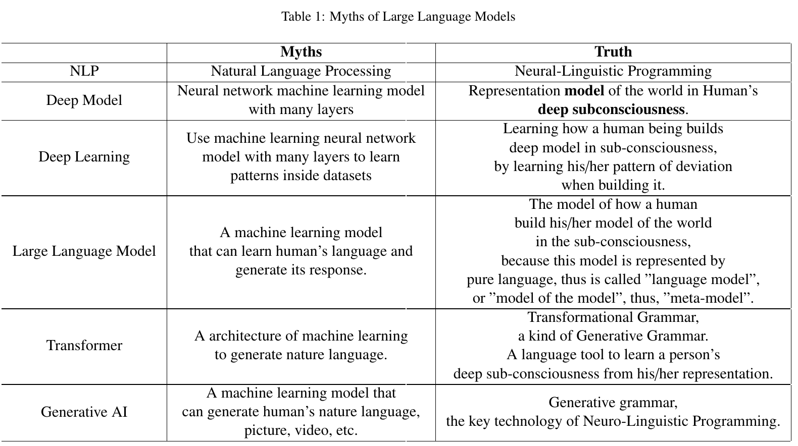
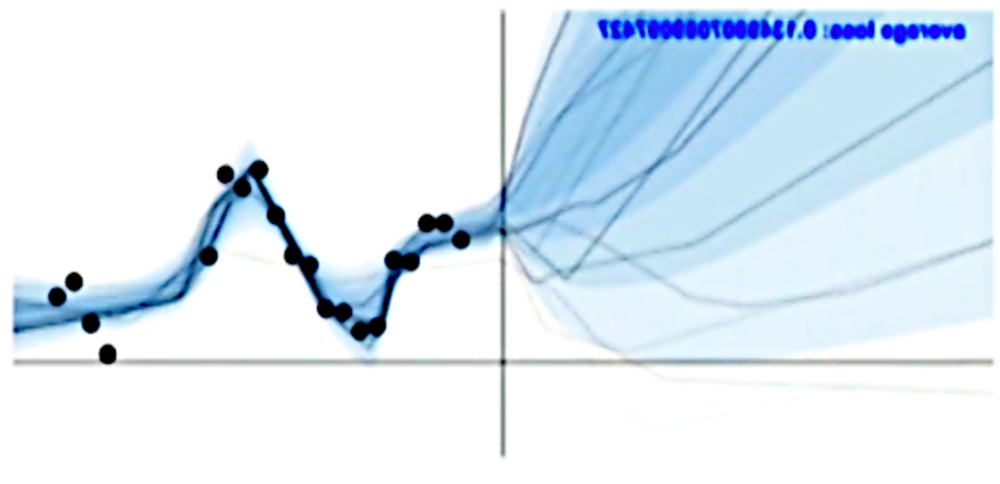

Intro

The Artificial Intelligence research community is severely misled by propaganda. All the terminologies and
technologies are either fraudulent or deviated from their genuine meaning. The table above provides a brief overview of the
fraudulent terminologies and their genuine meaning.
There is no free lunch in real life. You can never build an Artificial Intelligence without investigate Human Intelligence.
From the Lessons learnt from XAI, we know there is no intelligence in the data, no matter how big it is.
if there is no intelligent in data, and the machine learning models are simply an mathematic equation that is always wrong, how does the machine perform human-like intelligence? How indeed does the LLM understand us so deeply? It can even provide customized answers to different people when they ask the same question.
To understand how does the machine be able to understand human, let us first think about how we human beings
understand each other.
For example, suppose we are having an a little chat, and I said “Did you notice the stock market this week? What a
roller coaster.” I am sure you understand what I mean. Now imagine I said the same words to a three-yeas old. He/She may not
understand me, although he/she recognizes all the words in the sentence.
Let's think about why do you understand me, and the three-year-old does not. You will find out because you know what a stock market is, and you know the common character of a stock market is (no matter how you know it, maybe from your experience, or from conversation involved, or from a movie, etc.) You also know what a roller coaster is, and you know what the specialty of a roller coaster, and more importantly, you have imagination and analogy (which plays a key part in human’s intelligence), allowing you to connect those two together and let you know my meaning, my unspoken semantic beneath the words......
These verbose, relentless chats above exist only in our sub-consciousness, people seldom aware of them, because it is in our deep sub-consciousness. They are the deep model of the sentence I said. And those words in the sentence, the 12 words, is the surface model. They are in our consciousness, what we are well aware of. That is why you understand me, and the three-year-old does not. Because you and I share the common deep model of the sentence, and the three-year-old knows only the surface model.
The point is, to make an effective conversation. It is not enough to understand all the words in the sentence. He/She/It has to know the unspoken, common knowledge that is deep in the sub-consciousness.
There is no free lunch in the world. To make a machine understand human, it has to know the deep model of human beings too.
Deep Model
Now let us take a look at what the real deep model is.
In the example above, the sentence I spoke to you “Did you notice the stock market this week? What a roller
coaster”, the 12 words in total, is the surface model of the sentence. But the whole a lot more sentences I did not spoke
aloud, but I take you will understand for granted, are the deep model of this sentence. These words are the model of
my deep conscious when I speak to you. You understand me, because we share the same deep model of the world (not
all, because people have their personal experience of the world which is unique to anyone else).
As we live our lives in the world, we build a model of the world in our sub-consciousness. This model is purely
represented in language, and is deep in the sub-consciousness, we may not even be aware of it [29, 30, 31, 32]. This
is called Deep Model. When we need to express ourselves, either to speak or to write, we turn to our deep model, and
choose some vocabulary, choose a sentence pattern, choose some figure of speech, and make them into a sentence,
and speak out. That forms the Surface Model of the world [31, 32].
Building deep model is mapping our experience in the real world to our sub-consciousness, while building surface
model is mapping our sub-consciousness to the consciousness.
Neuro-Linguistic Programming—The Real NLP
The information in real life is infinite, but our brain’s information processing competence is limited. Thus we
cannot map the whole world into our subconsciousness, divergence is inevitable. When we try to express ourselves, to
map the deep model in our sub-consciousness to the surface model in our consciousness, divergence is also inevitable.
For example, please try to describe honey to one who has never seen honey before in his/her entire life. You may
exhaust your language, and still find it impossible. But this is not your fault, even Shakespear cannot make it, not with
another 100 scripts.
Thus, the divergence between models is inevitable, not only between real-world and deep model, but also between
deep model and surface model.
Researchers classified the divergence into three categories: deletion, distortion and generalization. These deviations accomplish our greatest creations, and lead to our deepest frustrations. Sometimes these deviations are blessings,
sometimes they are curses, depending on the circumstances.
• Generalization: The generalization deviation gives us the ability of learning and abstraction. For example,
if a kid get burnt when touching a working oven, the generalization deviation will let him know not to touch
any oven when it is on. He does not need to test on every kinds of oven to know that. That is one of greatest
difference between human and machine. However, if the boy is over-generalizd when he built his model of the
world, he will never touch any oven at any time in his life, that goes to another extrem, and will cause difficulties
in his social behavior.
• Deletion: The deletion deviation blessed us with the ability to focus on our goal, and get rid of interference in
the environment. It also gives us strength and courage, when we are facing great threat in the circumstance. For
example, a little girl from slum district, use deletion deviation to get herselve an offer to Harvard University
and start a new life. On the other hand, the same deletion deviation could make us obsessed on our prejudice,
and refuse to see the real-world, even it is happening right in front of our eyes.
• Distortion: This distortion deviation blessed us with the ability of imagination. Most, if not all, of human’s art
creations are given by the distortion deviation. Van Gogh would not create the “Stars” if he built his model
of the Milky Way without distortion to the real world. People will not keep working when there is no hope,
without distortion deviation when they build the model of the world.
It is the deviations that make us unique. Everyone has unique strategies of deviations when building our models
of the world, like our fingerprints. That is why we all live in the same real world, but our experiences are unique, and
that unique deviations build unique models of the world, and the unique models shape our unique personalities, and
our unique personalities determines our unique destinations.
Mathematical model are tools to standardization. Standardization distinguishes deviations. The essence of human
beings is free will. Using large language model, will distinguish our free will, making us into soulless beings, walking
dead.
Human’s mind is impredicative self-referential. Impredicative problem cannot be represented as an algorithm that
halts after a finite number of steps.
Mind is incomputable.
An algorithm is purely syntactic, it is human who put semantic on the symbols, not machine.
Traditional artificial intelligence (AI) systems are algorithmic, and can neither hear nor feel...
Language is too discrete to express the total depth of experience.
Mind, based on models generated by the context dependent functionality of representation system, can perform
valid reasoning about problems that cannot be described by a list of numbers. Let machine be able to process words
such as “self,” “life,” and “mind” [31, 32].
There are pattern in our strategies of building deep models, and that pattern can be learnt, and represented into
first-order logic.
Neuro-Linguistic Programming (NLP) is a technology to find the unique patterns of people’s deviations, and build
a formal model of it. As it is the model of how human beings build the model of the world, thus, is called model of
model, i.e., meta-model [29, 30, 31, 32]. As our model of the world is represented in pure language, thus researchers
also call it, model of langauge, or, in other words, language model. That, is the origin of LLM, and is what LLM
really stand for.
Transformer
The technology of NLP is Transformational Grammar, which a kind of Generative Grammar [29, 30, 31, 32], that
is the origin of Transformer. Transformational grammar studies rules of human’s representation, and represent them
in first-order logic. Let machine has the ability to learn a person’s pattern of building deep model, i.e., his/her soul.
Human’s mind is easily influenced by the environment. A short video can shape one’s sub-conscious. A sudden
noise can even terrify a person out of his/her wits. If someone forceful express an opinion that originally belongs
to you, you will dramatically give up this opinion and hold the oppersite [30] (this is a classical use case studied by
Neuro-linguistic programming, and is the common tactic used by mind controllers).
Machine also automatically generate representation systems, including text, figure, video, audio, etc.. driven by
LLM, a social bot can generate 1000000 short videos in 5 minutes. LLM is manipulating human being’s subconsciousness, and human hardly notice it.
Currently there is no LLM that is open sourced, although social media keep using “open-source LLMs” to mislead
people. Thus, all the LLMs are black boxes. Nobody knows the strategies of the LLM, except the very few experts
in the very few companies. Besides, the code of LLMs has been sealed into chips, it is impossible for the others to
interrigate the algorithms of LLMs.
Mathematics is rigid, it is a very good tool for standardization. Standardization could enhace effeciency of some
domains, for example, production line, machine manufacture industry, etc. But standardization also terminates creations of free wills. It refuses deviations, forbids improvisation, and eliminates innovations. Over use mathematic models will leads to a society without changes, innovations, and revolutions. Our human beings are souls with free
wills. Using mathematic model to shape (and even manipulate) our conscious and even sub-consciousness, is murdering our souls. We will becomes puppets of machine, soulless beings of walking dead.
The machine is playing God now, and we human beings are hardly aware of it.
See the original paper for more details.
Lessons Learnt

All data are history data, because you cannot collect data from the future. No matter how accuary your model fit the history,
there will always be unexpected pattern in the future. The
future is always filled with possibilities. Using machine learning in real-life, is to
constrain the future in history’s pattern, forbid any innovation, refuse any changes, eliminate any revolutions. There are only two kinds of things in
the world: those that can be predicted, and those cannot. For the latter, any endeavors trying to predict their future are nothing but superstitions.
Lessons learnt from XAI use cases:
Lesson 1: Machine Learning model is a mathmatic equation afterall.
No matter what dataset it is trained on, no matter what machine learning model it is, and no matter how complicate
the model is, it is nothing but an mathematic equation afterall, with features as inputs, and classification results as
output.
As quoted from Alan Kay[26],
“There are certain themes deep inside humanity, without which we cannot be human.
Two of those themes are communication and fantasy...
fantasy (is things)...like mathematics and science.”
Mathematic exists in human’s fantasy only. We human create mathematics in our imagination, and develop mathematics by manipulating our imagination. It is in the ideal world only in our fantasy where mathematics is right.
There is no real “straight line” or real “circle” in real-life, and there is no event that really obeys gaussian distribution,
not even one. Everything is simplified in mathematics. Every mathematic equation has presumptions that make it
hold. Any invalidation of the presumptions will invalidate the model. Any attempt to remove one presumption in a
mathematic model will always bring in more presumptions. Overlook these presumptions, and believes there is an
mathematic model could hold globally is one of the biggest superstitions of human beings.
Science and engineer are built on mathematics. During scientific and engineering research, researchers construct
mathematic models, amend it and test it in real-life trails. Finally, the most useful model is chosen. All models are
wrong, it’s just some are more useful than the others.
Lesson 2: All models are wrong, because all models are simplifications of the real world.
Mathematics exist only in human’s mind. Human’s mind is a model of the real world. When we are living in
the world, we transform our experiences into a model in our sub-consciousness (as it is deep in our mind, thus it is
called “deep model” by cognitive psychologist in neuro-linguistic programming, which will be expatiated in more
detail in the next section). When we need to express ourselves, for example, when having a conversation or doing a
presentation, what really happens is that we search our deep models and make a lot of choices. We choose certain
vocabulary, certain figure of speech, a sentence pattern, etc., compose them into a sentence, and then speak it out
(or type it on the keyboard). This forms our languages, as they are in the shallow consciousness that we are aware
of, cognitive psychologist named it the “surface model” (or “shallow model”, in contract to “deep model” in the
sub-consciousness).
The information processing power and storage of our brain is finite, but the information in the real world is infinite.
Thus, there always be deviations between our deep models of the world and the real world.
Deviations not only exist when we transforming the experiences in the real world into deep model in the subconsciousness, but also exist when we transforming the deep model into our surface model. Please try to describe
“honey” to a man has never tasted honey before. You will find the incompetent of our language. Even Shakespear
cannot deliver the full semantics of “honey” to a man never taste it before. For the semantics of our deep model in
sub-concsiousness is much richer than our surface model, i.e., what we can say. The only way is to let him taste the
honey himself.
Deviations are not entirely bad for us, in fact, they are the sources of all creations, and also the reasons for the
diversification of the world.
Cognitive psychologist classifies these deviations into three classes: generalization, ignorance, and distortion.
If there were no generalizations, human beings will lose the ability of abstraction, and abstraction is the foundation
of learning. For example, a man get himself burnt when he was a little boy when touching an oven when it is on, the
generalization in his cognition let him learns immediately not to touch any oven that is on, no matter what type the
oven is, at what process of the burning, what time he saws it (generalization happens on space and time). A machine
has no such power. Thus, when machine is learning, if human did not construct the ability of generalization in its
knowledge base, it has to touch all kinds of ovens, during all the time period of burning, then it can learn that not to
touch those ovens it has been trained on. When it sees a novel oven that it has never see before, it still does not know
whether it is touchable.
If there were no ignorance, human will lose their ability to focus. We have to pay attention to every detail of
everything in our life, and will soon be exhausted over hypersensitivity. Without ignorance, Human cannot achieve
anything.
If there were no distortion, there would be no art. Because without the ability of distortion, we will loss imagination. Without imagination, there would be no mathematics, no science or engineering, no figure of speech, no music,
and no painting. Almost all art creations are built on imagination. Vincent van Gogh creates ”Starry Night” by distort
the starry night of the real world in his mind. Shakespear would never be able to “compare thee to the summer’s may”
if he has to describe the beautiful girl in every details without distortion.
Going too far is as bad as not going far enough.
If there were too much over-generalization in a person’s mind, will cause obstructive in his everyday life. For
example, in the previous example of a man touching a oven when it is on. If the man is over-generalized when
constructing his deep model of the world, he might cannot stay in a room with a oven in it ever since, that will cause
sever obstacles in his social life.
If there were too much ignorance when person build his deep model of the world, he might become arrogant or
incogitant.
If there were too much distortion, he might become a nihilist.
All human’s pain, frustration, obstacles and fury can trace their origin in the deviation between human’s subjective
mind (the deep model of the world in his/her subconsciousness) and objective real world. In the real world, there is
seldom anything that is really dangerous. It is people’s mind that making them feel so.
Lesson 3: Mathematic models are tools of standardization. Standardization eliminates creations.
Mathematics is rigid, it is the most powerful tool for standardization. Standardization can enhance efficiency of
some domains, for example, mechanical parts mass production. But standardization also refuses deviations, forbids
improvisation, and eliminates innovations. Because standardization kills freedom. But life’s essence is freedom,
human’s intelligence depend on free wills, without it, we are soulless beings that barely living.
Please think about the following questions:
Can you find an mathematic model that can represent the fragrance of a rose?
Can you find an mathematic model that can represent the sorrow of a man lost his lover?
Can you find an mathematic model that can represent the moment when Beethoven is composing “Symphony of
Fate”?
No, you cannot.
You can easily build a mathematic model to describe the trajectory of the Milky Way, but even with a model
100 times more sophisticated, you cannot describe human’s creation, not even the most insignificant one. Because
creations of the nature cannot be standardized. They are impredicative self-referencing processes.
Mathematicians hate impredicative. They call it “a necessary evil”, “closed loops of causality”, and “bizarre
systems”. Because an impredicative loop or self-referential chain of causal links cannot be represented as an algorithm
that halts after a finite number of steps. In other words, an impredicative system cannot be solved by an algorithm.
Human’s intelligence (or cognition, mind) is impredicative.
Using mathematic model in a domain, is to apply a standard in the domain. Over use of mathematic models in
every domains of the society will leads to a society forbids changes, eliminates innovations, and refuses revolutions.
All data is history data, because you cannot collect data from the future, from things that has not yet happen. Thus,
the models can only learn the patterns from the history. Using these models to make decisions is to apply history’s
pattern on the future, judging people by their history behavior. This is reinforcing the history, making those rich in the
history even richer, and those used to be poor even poorer. This does not bring justice to human’s society as claimed,
on the contrary, it brings unjustice and enlarges the gap between social classes, it also eliminate innovations, and
forbid revolutions.
Real-Life Use Case 1: Crime Prediction
To increase the human resource efficient, many police stations in the US and UK are using AI to predict crimes.
People feed history crime data into the machine, and the machine predicts the post code of the zones where the next
crime most likely to happen. As people focus on violence crimes only, and slummy zones have high violence crime
rate in the history. So, the machine predicts the slummy zones have high crime probability. More police force is
dispatched in these zones. As a result, minor crimes that would not be spotted in the history are spotted now, and
thus the crime rate keep rising. Every arrestment creates a new data record. New data records feed back to the
machine, making the machine predicts with more confidence that these zones have high crime incidence. Higher and
higher crime rate will bring bad reputation. Bad reputation will reduce the house price in these areas, people began to
abandon these areas, and the slummy zones get poorer and poorer very quickly. A spiral is formed.
Is that true that the slummy areas have the highest crime rates? No, if people pay attentions to financial crimes,
they will find out that the high crime rate zones are the rich areas. If they fed these data into machine, the machine
will make predictions that these rich areas have highest rime incident, and police force will focus on these area, and
more minor crimes will be spotted, the arrestment rate will rise, making the machine more confidently predict that
these rich areas are more likely to commit crimes.
Maybe people ignore financial crimes because it is more difficult to detect than a violent crime. But it is true that
the datasets police used are highly biased. Biased datasets fed to the machine, making the machine generate biased
decisions. Biased decisions cause biased results. Biased results create more biased data. Biased data fed back to the
model, making the model even more biased.
As discussed above, real life datasets are always biased, so is the model. It is impossible to construct a model
without any biases.
As a result, all what the model is doing is protecting the rich, and harvesting the poor. Science and technology did
not bring the society more justice, they are ruining it.
Real-Life Use Case 2: University Ranking
The global universities ranking is very important to univeristies all over the world. It is a mathematic model in
its essential, working as a standard. And it is not a blackbox, its features are exlicitly listed, such as “citations of the
staff”, “employment rate of graduates”, “have a large stadium or not”, etc. Nowadays, univeristies all over the world
follow that standard, willingly or not, trying their very best to recruite high-cited researchers as part-time staff, build
fabulous stadiums, fabricate graduates’ employment status, etc. In the end, every universities allover the world are
exhausted and heavily in debt, but what good does it do to the students?
Besides, can the standard model reallt represent the quality of a university?
Can you find a mathematic model that represent the growth of a student’s knowledge during his/her university
life?
Can you find a mathematic model that represent the happiness a student has felt during his/her university life?
Can you find a mathematic model that represent the friendship and love a student has gained during his/her
university life?
And every student is unique. There are hundreds and thousands of new students every year.
People (no matter from slummy areas or rich areas) have been manipulated by the mathematic models. And that
mathematic models are wrong, even ridiculous. In this giant game dominated by the mathematic model, everyone is
exhausted, nobody wins.
The long numbers behind decimal points and the sophisticated equations give the mathematic models an illustion of being “scientific” and “accurate”. People believes these models are build by mathematicians after prudent
calculation and investigation. But this is not the truth. Take the global university ranking model as an example, it is
constructed decades ago by the editors of “American Weekly”, a journal on the brink of suspension. To save the sales
of the journal, the editors planned a special column about the ranking of American universities, and construct this
ranking model themselves. They choose some features that they believe is important to measure a univeristy’s quality
and put random weights on the features at their subjective wills. Now, this model (after minor revisions) becomes the
global standard of universities.
The standard is dead, but we are not.
Lesson 4: All data are history data, machine can only learn from the past.
Machine learning models are pattern recognizers, they can only learn the pattern from the history, because all the
data one could collect in the world are history data, no one can travel through time and collect data from the future
[27]. Using machine learning models to make decisions is using history to predict the future. It is right only on the
premises of the assumption that “the future will exactly be the same with the history”. In other words, “situations
that never seen before will never happen in the future.” This is the Question of Hume. Wherever this assumption is
invalid, the machine is doomed to make mistakes[28].
As shown in Figure at the beginning, all the data you can collect are history data, because you cannot collect data from future.
All models are learning history’s pattern, and enforce it to the future. The machine is making those who are rich in
the history, richer in the future, and making those who are poor, stuck in poverty more hopelessly. Machine learning
models are ripping hope of change and revolutions from the society, splitting the gap between social stratification.
Machine learning models are beneficial only to these with vested interests, and those with vest interests are exactly
those who build the model.
And the majority who suffers from the models’ decisions, do not know what the model is doing, they do not
understand why did the model doing that, they cannot refute the model’s decisions. Any refutations are accused as
“going ageist the trend of the times”.
It is algorithm hegemonism.
Lesson 5: The Data is Profoundly Dumb. There is no Intelligence in Data.
Figure at the beginning illustrates one of the myths of machine learning: no matter how accurate the model fit the history, there will
always be unexpected pattern in the future. The future is filled with possibilities. All data are history data, you cannot
collect data from the future. Using machine learning in real-life as decision maker, is to trap the future in history’s
pattern, forbid any innovation, refuse any changes, decline any possibilities.
Lesson 6: Machine learning is pseudoscience
There is a property that makes a problem a scientific problem — having community recognized measurable metrics.
Machine learning does not have that. All the community recognized metrics, such as AUC, false positive rate, false
negative rate, information value, etc. can only measure datasets, not the model. That is a great difference between the
two. A dataset with high AUC only means that the data follows some obvious patterns, no matter what model is used.
It is the metric of the dataset, not the model. machine learning researchers will be familiar with the experience that a
dataset get high AUC with one model will also get high AUC with other models. It is the dataset that these metrics
are describing. Without particular dataset, it is meaningless to talk about the AUC of the model. Because there is no
way to measure the ability of a model in predicting the future.
That is to say, there is no metric that measure the model.
Thus, machine learning is not even a scientific problem. It is pseudoscience.
For all the creations of nature, their future is not for us to tell.
The essence of live is freedom, and freedom means unpredictable.
Lesson 7: “machine has intelligence” is an illusion.
There are only two kinds of things in the world, those that can be predicted, and those cannot.
Everything that is alive, is unpredictable. Because life’s meaning is freedom.
Those that can be predicted, are lifeless, rigid, and machine-like. They have a fixed pattern that will never change
throughout the whole time of their existence. Mathematic problems are those kinds of things. For example, “find
all the prime numbers between 1 and 100000000”, “solve a integral formula”... whenever you ask the problem, the
pattern will always be the same. These kinds of problem are problems that can be (and better be) solved by machine.
This kind of problem, is that will answer “Yes” to Hume’s question.
As discussed above, all mathematic models are wrong, they are right only in the ideal world exists in human’s
imagination, or, in other words, mathematic models are right only in human’s illusion.
Thus, the “machine has intelligence” or “machine understand semantics” is just an illusion.
See the original paper for more details.